partAtlas
Ein Katalog für deine 3D-Druck-Sammlung: Modelle finden, ordnen, zu Baugruppen zusammenstellen und festhalten, was wie gedruckt wurde — auf deinem eigenen Rechner, ohne Cloud und ohne Konto.
Überblick
partAtlas liest die Ordner, in denen deine Modelle schon liegen, und baut daraus einen durchsuchbaren Katalog. Deine Dateien bleiben, wo sie sind. Was du im Katalog ergänzt — Tags, Material, Sammlungen, Notizen, Fotos, Drucke — gehört dir und bleibt erhalten, auch wenn du Dateien verschiebst oder umbenennst.
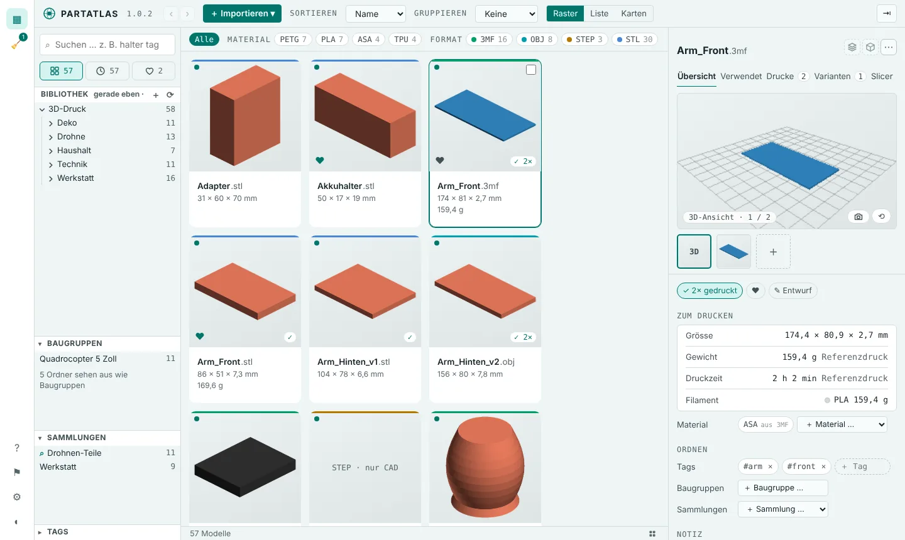
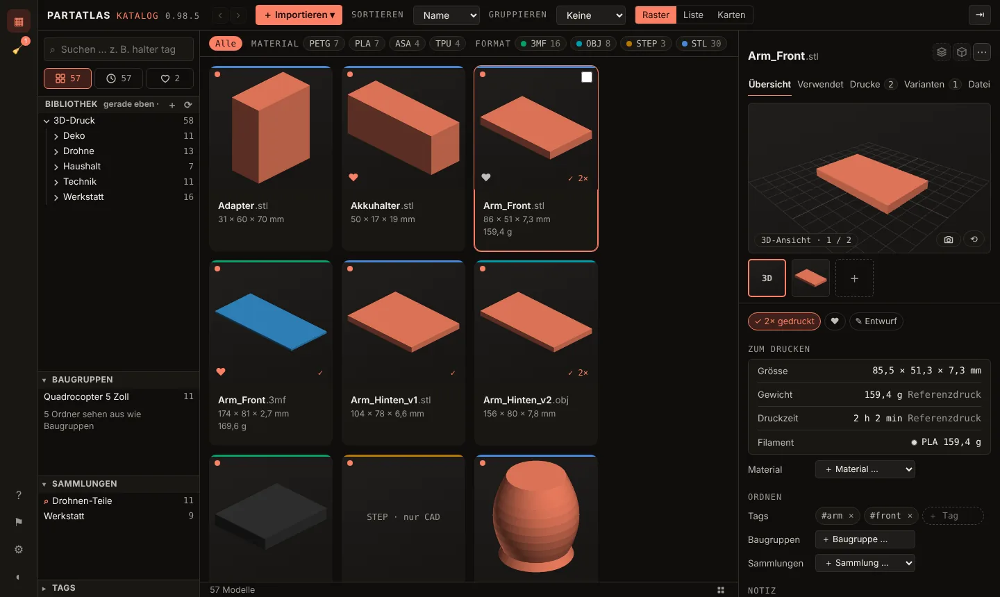
format:stl; Suchen lassen sich merken.http://127.0.0.1:8765. Gestartet wird es unter Windows mit start.bat, unter Linux mit ./start.sh;
schliesst du das Fenster, in dem es läuft, ist partAtlas beendet. Dieses Handbuch öffnet in partAtlas der Knopf ? links unten
oder F1.Wie partAtlas denkt
Die Datei führt, der Katalog folgt. Du denkst in Dateien: du legst ab, verschiebst, benennst um, löschst. partAtlas macht mit. Jedes Modell im Katalog gehört zu einer Datei und wird an deren Inhalt erkannt, nicht am Namen.
| Was du tust | Was im Katalog passiert |
|---|---|
| Neue Datei in einen Ordner legen | Beim nächsten Einlesen entsteht ein neues Modell. |
| Datei verschieben oder umbenennen | Das Modell folgt; Tags, Material und Drucke bleiben dran. |
| Datei am selben Ort neu speichern | Es bleibt dasselbe Modell, partAtlas liest den neuen Inhalt. |
| Datei kopieren | Ein Modell, zwei Orte — zu sehen unter Bereinigen › Gleiche Datei. |
| Datei im Dateimanager löschen | Das Modell bleibt. Am Ende des Einlesens fragt partAtlas, was damit geschehen soll: ins Archiv, behalten oder löschen. Die Druckhistorie geht nicht verloren. |
| In partAtlas löschen | Das Modell kommt in den Papierkorb von partAtlas. Die Datei bleibt unverändert im Ordner liegen — partAtlas löscht in deinen Ordnern nie etwas. Vorher zeigt ein Dialog, was am Modell hängt. |
Eigenes — Tags, Material, Sammlungen, Baugruppen, Notizen, Anhänge, eigene Bilder, Drucke — liegt im Bestand von partAtlas, nicht in deinen Ordnern (siehe Daten und Sicherheit).
Die Sammlung einlesen
Wähle einen oder mehrere Ordner mit deinen Modellen. partAtlas liest alles darunter ein und zeigt die Ordner links unter Bibliothek — die Struktur bleibt deine.
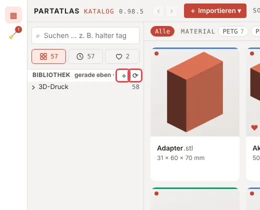
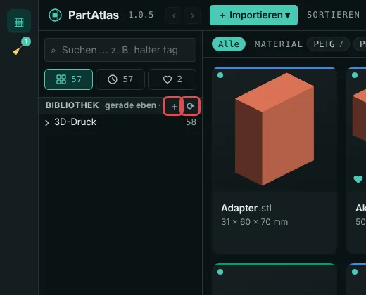
- ＋ bei „Bibliothek“ (oder Importieren › Ordner hinzufügen …) öffnet den Ordnerdialog des Rechners. Vorher zeigt partAtlas, was kommt — Modelldateien je Format — und fragt.
- ⟳ liest alle Ordner neu ein: neue Dateien kommen dazu, Verschobenes wird wiedergefunden, Fehlendes erkannt. Neben „Bibliothek“ steht, wann zuletzt eingelesen wurde.
- Die Modelle erscheinen sofort; Maße, Gewicht, Vorschaubilder und — mit FreeCAD — STEP-Dateien folgen im Hintergrund. Den Stand zeigt eine kleine Anzeige unten links. Die Oberfläche bleibt dabei bedienbar.
- Fehlen nach dem Einlesen Dateien, die vorher da waren, öffnet sich am Ende ein Fenster: je Datei oder für einen ganzen Ordner Ins Archiv, Behalten oder Löschen. „Später entscheiden“ ändert nichts.
Hochladen gibt es nicht: die Dateien bleiben in deinen Ordnern. Was neu dazukommt, legst du im Dateimanager ab und liest neu ein. Beim Start liest partAtlas von sich aus nicht ein (einstellbar unter Einstellungen › Einlesen) — bei einer grossen Sammlung auf einer langsamen Platte bleibt der Start so ruhig.
Ansichten und Auswahl
Dieselben Modelle in drei Formen, umschaltbar oben rechts:
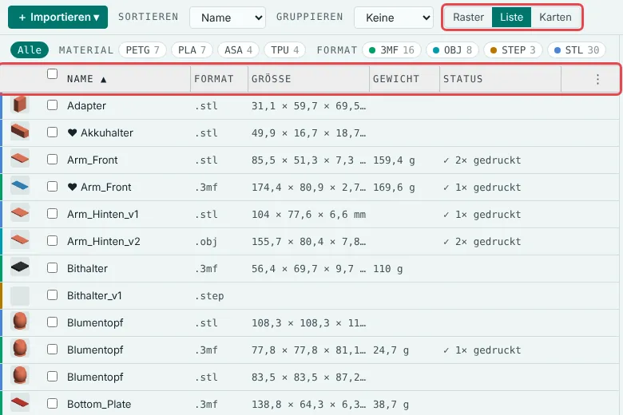
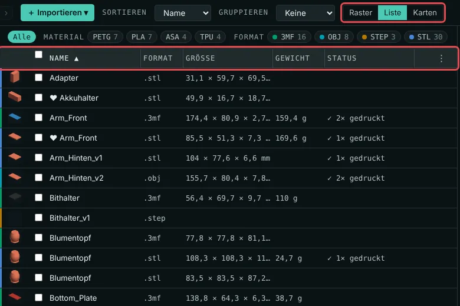
- Sortieren und Gruppieren (nach Ordner, Format, Material, Status oder Datum) oben in der Leiste.
- In der Liste: Klick auf den Spaltenkopf sortiert, ein zweiter Klick dreht die Richtung. Die Linie zwischen zwei Spalten lässt sich ziehen, ein Doppelklick darauf setzt die Breite zurück. ⋮ rechts blendet Spalten ein und aus.
- Links stehen die Ansichten Alle, Neu und Favoriten, darunter die Bibliothek mit den Ordnern, Baugruppen, Sammlungen und Tags. Die Felder lassen sich zuklappen und in der Höhe ziehen.
Auswählen wie im Explorer
Ein Klick wählt ein Modell und zeigt es im Inspektor. Strg+Klick nimmt weitere dazu oder heraus, Umschalt+Klick wählt einen Bereich, Strg+A alles in der Ansicht. Auf freier Fläche lässt sich ein Rahmen aufziehen. Die Pfeiltasten bewegen die Auswahl, Enter öffnet das Modell im Standardprogramm, Esc hebt die Auswahl auf.
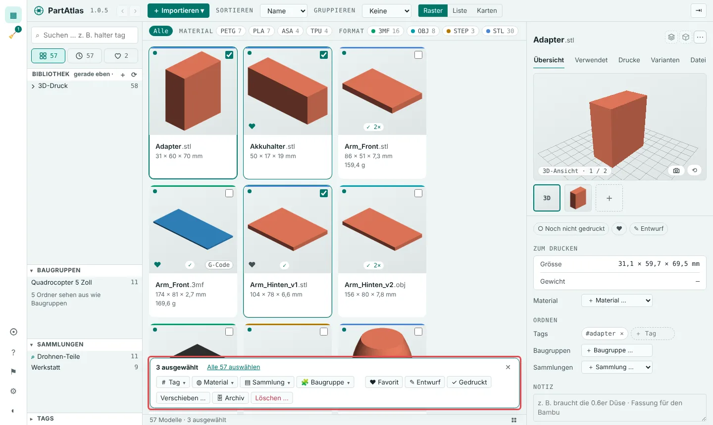
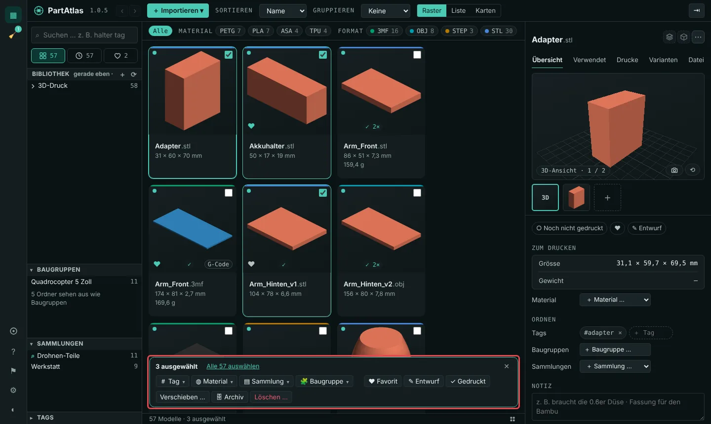
Sind mehrere gewählt, gilt die Leiste unten für alle: Tag, Material, Sammlung, Baugruppe öffnen ein Fenster mit Suchfeld und dem Stand („2 von 5“); ein Klick fügt allen hinzu, das Fenster bleibt offen. Favorit, Entwurf, Gedruckt schalten direkt; Verschieben, Archiv, Löschen fragen nach. Ein Rechtsklick auf eine Kachel bietet dasselbe für die Auswahl.
Suche und Filter
Das Suchfeld oben links versteht eine einfache Schreibweise; / springt hinein, Esc leert es.
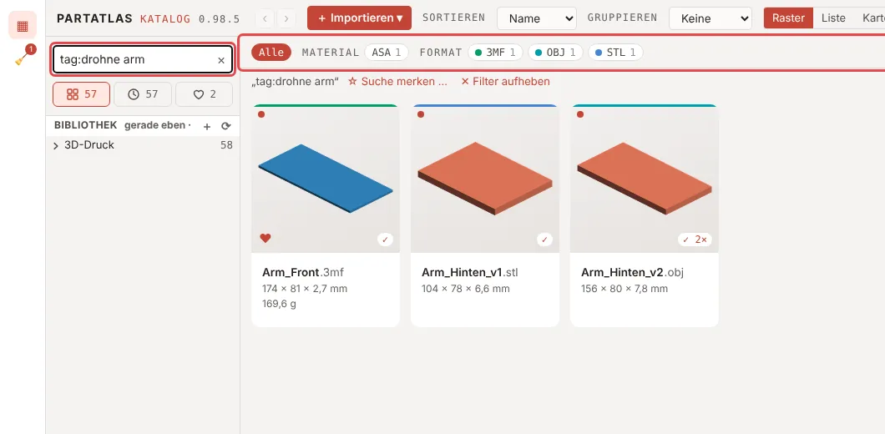
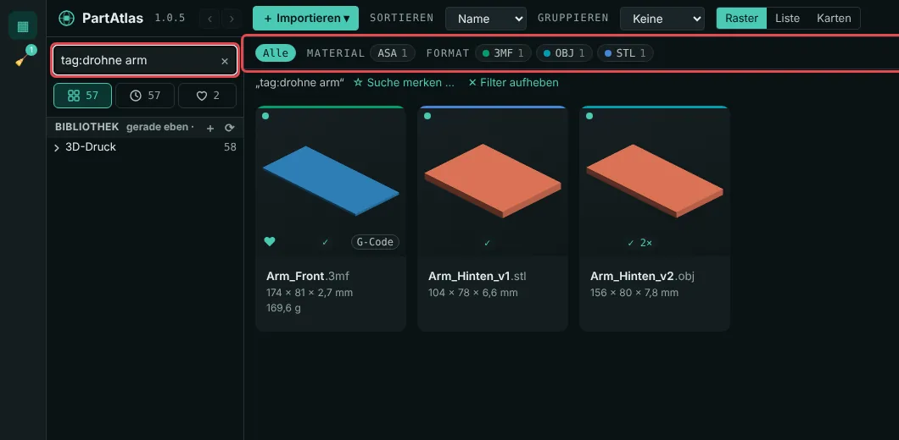
| Eingabe | Bedeutung |
|---|---|
halter | Jedes Wort muss vorkommen, auch als Wortteil. |
"arm front" | Genau diese Wortfolge. |
-deckel | Schliesst das Wort aus. |
tag:arm | Nur Modelle mit dem Tag „arm“ (genau, nicht „armatur“). |
format:stl | Nur ein Format: 3mf, stl, obj, step, fcstd. |
gedruckt:ja | Nur bereits gedruckte Modelle (nein für die übrigen). |
favorit:ja | Nur Favoriten. |
gcode:ja | Nur Modelle mit G-Code: an einem Druck angehängt oder schon im geslicten 3MF (nein für die übrigen). Auf der Kachel zeigt das Zeichen „G-Code“ dasselbe; ein Klick öffnet den Reiter. |
notiz:montage | Sucht in Notizen und in den Namen der Anhänge. |
Weitere Filter: ordner: · baugruppe: · sammlung: ·
material: · designer: · name: · titel:.
Alles lässt sich kombinieren. Die Treffer sind nach Fundstelle geordnet: ein Begriff im
Namen zählt mehr als einer im Ordnernamen. Über der Liste stehen Chips für Material und Format, mit der Zahl der Treffer in der Ansicht.
Gemerkte Suchen
Gilt eine Suche oder ein Filter, erscheint ☆ Suche merken …. Die gemerkte Suche steht danach links bei den Sammlungen (mit ⌕) und zeigt die Zahl der Treffer von jetzt. Ein Klick setzt die Filter wieder — sichtbar und änderbar. Rechtsklick: umbenennen, die jetzigen Filter übernehmen, löschen.
Tags, Material, Sammlungen
Tags
Kurze Schlagworte. Beim Einlesen schlägt partAtlas Tags aus dem Dateinamen vor (abschaltbar unter Einstellungen › Einlesen). Eigene Tags setzt du im Inspektor oder für viele über die Leiste unten. In der Seitenleiste wählst du über der Liste Eigene (nur Tags, die du selbst gesetzt hast) oder Alle (auch die automatischen, etwas blasser).
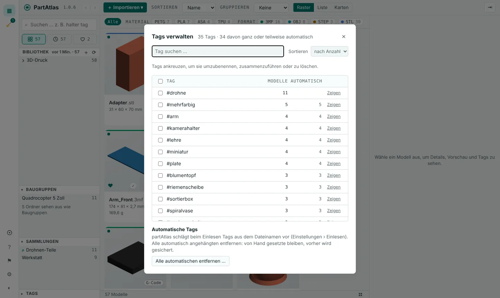
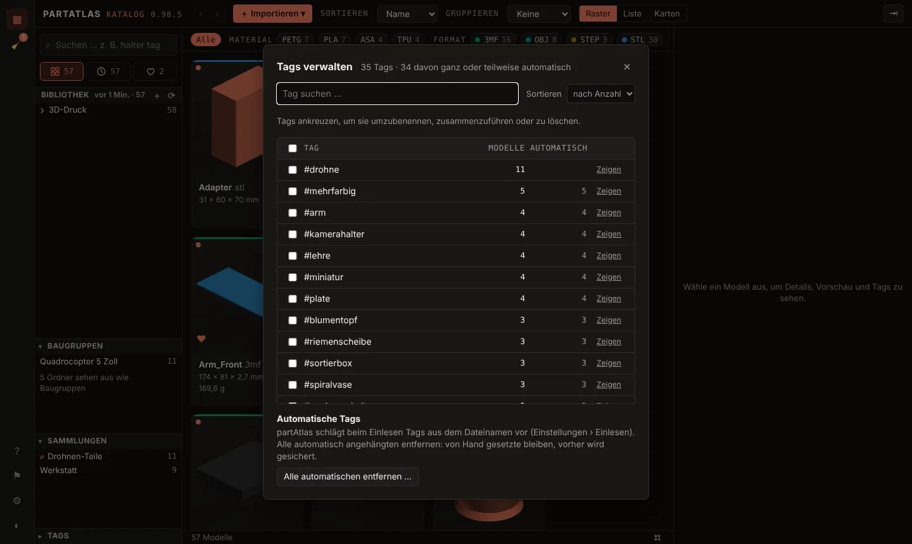
Tags verwalten (⋯ beim Feld „Tags“ oder Rechtsklick auf einen Tag): umbenennen, zusammenführen, löschen — gelöschte Tags liegen im Papierkorb und lassen sich zurückholen —, und auf einmal alle automatischen entfernen (die eigenen bleiben). Gelöschte automatische Tags kommen beim nächsten Einlesen nicht wieder.
Material
Je Modell lässt sich festhalten, woraus es gedruckt wird. Material dient als Filter und taucht in den Summen der Baugruppen auf.
Sammlungen
Frei zusammengestellte Gruppen, unabhängig von den Ordnern: „Für Weihnachten“, „Werkstatt“. Ein Modell kann in mehreren Sammlungen sein; hineinziehen oder über die Leiste, die Reihenfolge ist ziehbar. Daneben stehen die gemerkten Suchen.
Favoriten und Entwürfe
Das Herz auf der Kachel macht ein Modell zum Favoriten. ✎ Entwurf im Inspektor markiert einen Konstruktionsstand, den du gerade nicht brauchst; oben in der Leiste lassen sich Entwürfe ausblenden.
Der Inspektor
Rechts steht, was zum gewählten Modell gehört. Oben Name und Knöpfe: Slicer, CAD und ⋯ mit „Öffnen mit …“, Umbenennen, Verschieben, Bild hinzufügen, Löschen. Darunter die Reiter. Mit ⇥ oben rechts blendest du den Inspektor aus und holst ihn zurück.
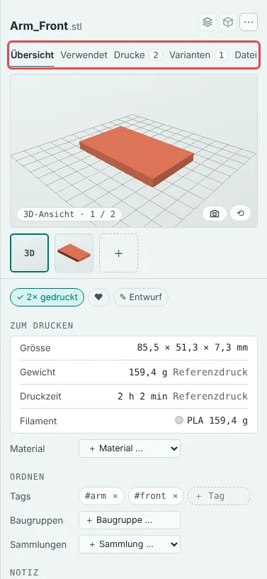
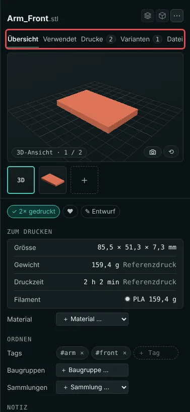
| Reiter | Inhalt |
|---|---|
| Übersicht | Galerie mit 3D-Ansicht, Bild aus der Datei, berechneter Vorschau und eigenen Bildern; gedruckt, Favorit, Entwurf; Maße, Gewicht, Druckzeit, Filament; Material, Tags, Baugruppen, Sammlungen; Notiz und Anhänge. |
| Verwendet | In welchen Baugruppen und Sammlungen das Modell steckt. |
| Drucke | Die Druckhistorie (siehe Drucke). |
| Varianten | Dasselbe Teil in anderen Formaten: automatisch gleicher Name im gleichen Ordner (Halter.stl und Halter.3mf), dazu von Hand verknüpfte (mehrere wählen › Rechtsklick › „Als Varianten verknüpfen“). |
| Slicer | Nur bei 3MF: die Einstellungen des Slicer-Projekts in Worten — Drucker, Düse, Schichthöhe, Wände, Füllung, Stützen, Temperaturen —, darunter alle Werte zum Durchsuchen. |
| Datei | Modelldaten, Quelle (Link), und jeder Ort der Datei — ein Klick zeigt den Ordner im Dateimanager. |
Bilder und 3D-Ansicht
- Blättern mit ← →, den Pfeilen oder einem Klick auf die kleinen Bilder. Die 3D-Ansicht lässt sich drehen, verschieben und zoomen.
- Eigene Bilder kommen mit ＋, per Hineinziehen oder mit Strg+V dazu. Rechtsklick auf ein Bild: als Vorschaubild festlegen, entfernen (es wird aufgehoben, nicht gelöscht), Vorschaubild berechnen.
- Der Kamera-Knopf in der 3D-Ansicht speichert die gedrehte Ansicht als Vorschaubild.
- Ohne funktionierende Grafikkarte zeichnet partAtlas die 3D-Ansicht in einer einfacheren Form selbst.
Notiz und Anhänge
In der Übersicht steht eine Notiz zum Modell, gespeichert beim Tippen. Anhänge — Zeichnungen, Anleitungen, Datenblätter — kommen als Kopie in den Bestand. PDF, Bilder, Text und SVG öffnen im Browser, alles andere im Programm des Rechners; ⤓ lädt herunter.
Drucke
Ein Druck hält fest, dass ein oder mehrere Modelle gedruckt wurden: wann, mit welchem Ergebnis, wie lange, wie schwer, mit welchem Filament. Im Reiter Drucke des Inspektors legst du ihn mit ＋ Druck an.
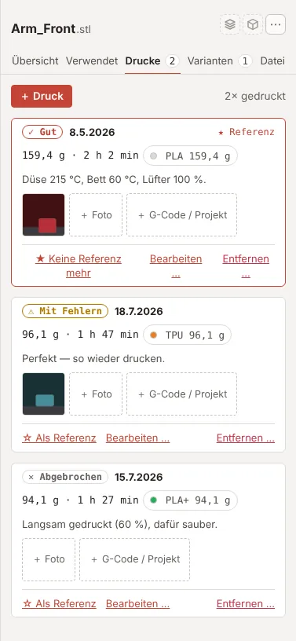
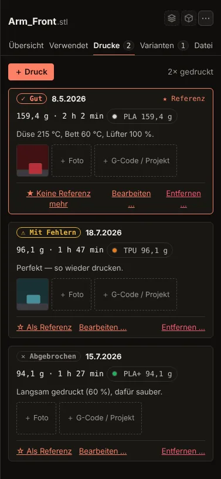
- „Gedruckt“ und der Zähler auf der Kachel ergeben sich aus den Drucken.
- Referenzdruck: der Druck, der als gut gilt; er liefert Gewicht, Zeit und Filament für Kachel und Übersicht.
- Fotos lassen sich einem Druck beilegen, auch durch Ziehen auf den Druck.
- ＋ G-Code / Projekt (oder die Datei auf den Druck ziehen) legt die gedruckte Datei aus dem Slicer zum Druck. partAtlas liest daraus die Einstellungen, zeigt sie in Worten und vergleicht zwei Drucke: was hat sich zwischen dem guten und dem misslungenen geändert? „Im Slicer“ öffnet genau diese Datei.
- Zusammen gedruckt: sind mehrere Modelle gewählt, legt „Zusammen gedruckt …“ einen Druck an allen an.
Baugruppen
Eine Baugruppe fasst mehrere Modelle zu einem Ganzen zusammen — ein Gehäuse aus fünf Teilen, eine Drohne aus zwanzig. Sie hat einen Namen, eine Beschreibung und drei Reiter: Stückliste, Notizen und Anhänge.
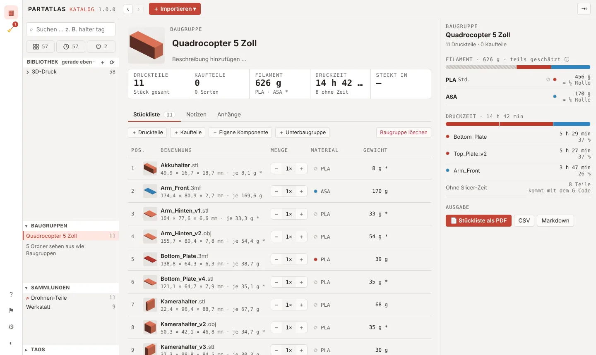
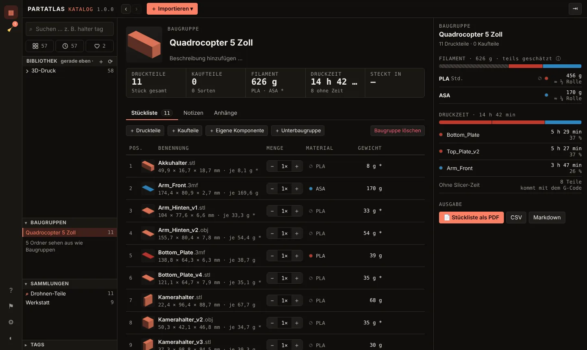
- Positionen: Modelle mit Menge; Reihenfolge ziehbar. Modelle kommen per Ziehen auf die Baugruppe, über die Leiste oder den Inspektor dazu.
- Kaufteile: Schrauben, Muttern, Magnete — ein Wähler mit Normteilen hilft. Selbst angelegte Kaufteile lassen sich dort auch wieder löschen, solange sie in keiner Baugruppe stecken.
- Eigene Komponenten: Teile, die du weder druckst noch kaufst. Name, Bild und Notiz genügen; eine Konstruktionsdatei auf dem Dialog liefert das Bild.
- Unterbaugruppen: eine Baugruppe kann andere enthalten.
- Summen und Fortschritt: Druckteile, Filament, Druckzeit, Kaufteile; was schon gedruckt ist.
- Notizen in Markdown (Schreiben und Vorschau), Anhänge wie beim Modell.
- Export: Stückliste als PDF (Inhalt einstellbar unter Einstellungen › PDF-Export), als CSV oder Markdown.
- Vorschläge: Ordner, die wie Baugruppen aussehen, schlägt partAtlas zum Anlegen vor.
Lager (Filament)
Das Lager hält fest, welche Spulen du hast und wie viel auf jeder noch drauf ist. Du öffnest es mit dem Spulensymbol in der Leiste links. Daraus beantwortet partAtlas „Reicht das Filament?“ für ein Projekt und zieht beim Anlegen eines Drucks den Verbrauch ab.
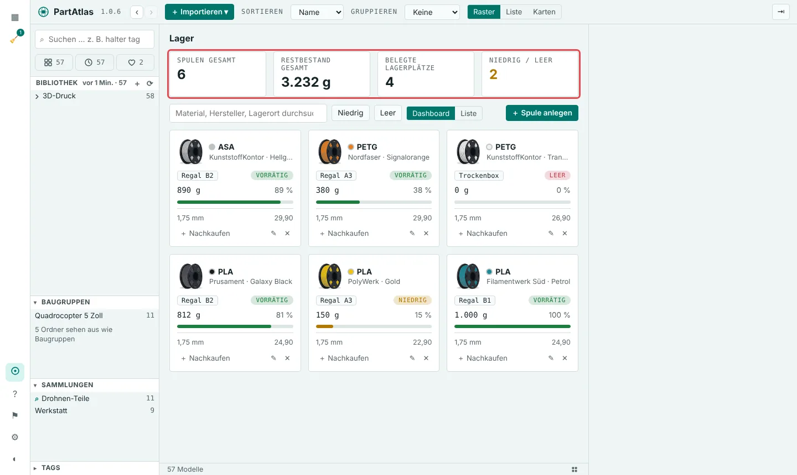
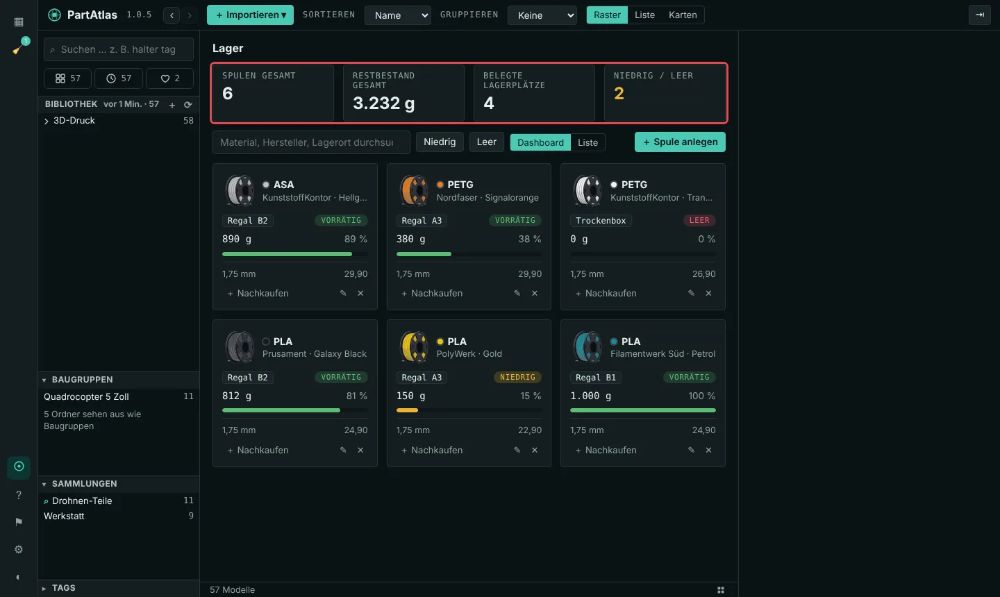
- Kennzahlen: Spulen gesamt, Restbestand gesamt, belegte Lagerplätze und wie viele Spulen niedrig oder leer sind.
- Status: Vorrätig, Niedrig (höchstens ein Fünftel der vollen Spule übrig) oder Leer. Die Knöpfe „Niedrig“ und „Leer“ zeigen nur diese; die Suche findet Material, Hersteller, Farbe und Lagerort.
- Dashboard oder Liste: Karten oder eine Tabelle, die du nach jeder Spalte sortierst. Ein Doppelklick auf eine Karte oder Zeile bearbeitet die Spule.
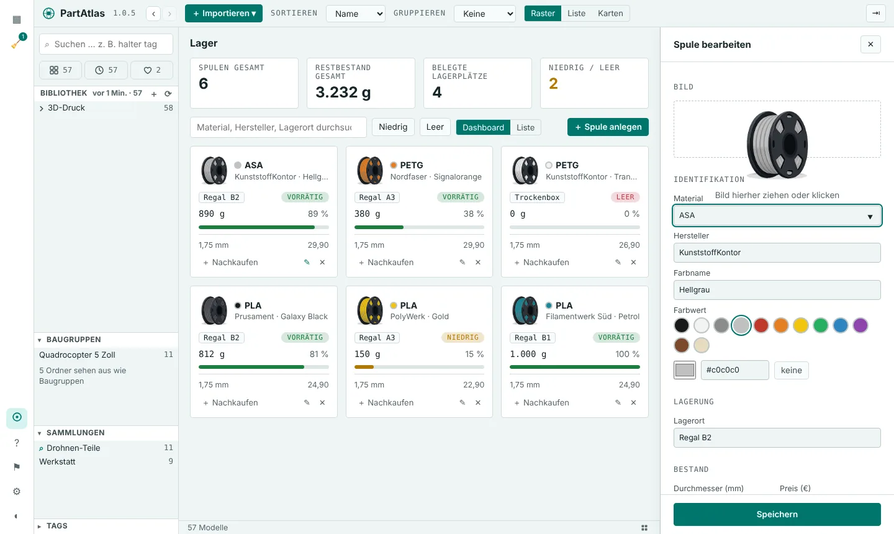
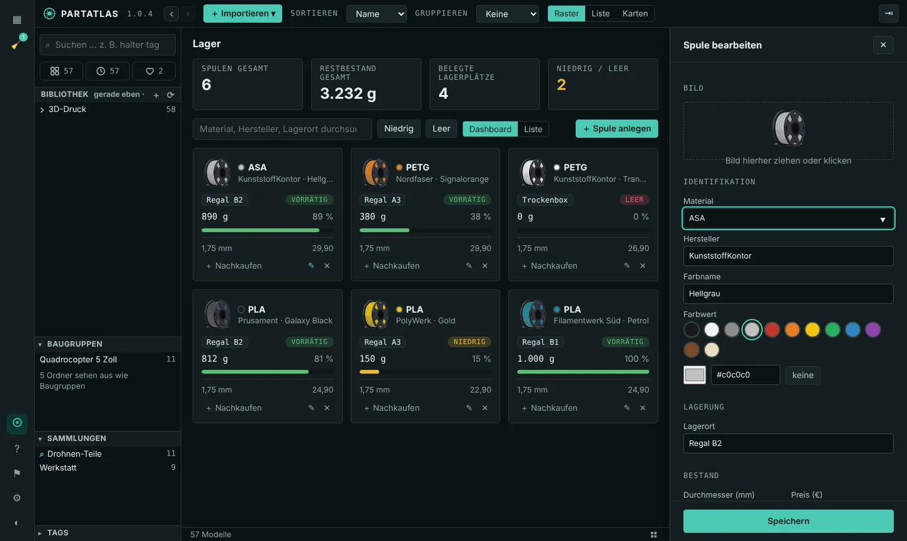
- Spule anlegen: Material, Hersteller, Farbname und Farbwert (Palette, Farbwähler oder Hex), Durchmesser, Gewicht der vollen Spule, Rest, Preis, Lagerort, Notiz und optional ein Bild (PNG, JPG oder WebP bis 5 MB, per Klick oder Ziehen). Die Anzahl legt mehrere gleiche Spulen an, jede mit eigenem Rest.
- Nachkaufen: auf der Karte „＋ Nachkaufen“. Neue, volle Spulen mit denselben Angaben; Anzahl, Menge, Preis und Lagerort kannst du anpassen.
- Löschen: das ✕ löscht die Spule, „Rückgängig“ in der Meldung holt sie zurück. Eine Spule ist kein Modell; partAtlas löscht dabei keine deiner Dateien.
Reicht das Filament?
Bei einem geslicten 3MF zeigt der Inspektor unter „Reicht das Filament?“ je Filament, ob eine Spule aus dem Lager reicht: gleiches Material, ähnliche Farbe, über alle Platten zusammengezählt.
- reicht: eine Spule hat genug; sie wird mit Rest und Lagerort genannt.
- reicht mit Spulenwechsel: nur mit einer zweiten Spule; beide stehen da.
- reicht nicht: mit der fehlenden Menge.
- unklar: keine passende Spule, oder die Datei kennt keine Mengen.
Dieselbe Spule zählt nicht doppelt. Die Warteschlange zeigt vor jedem Modell einen Punkt (grün, gelb, rot, grau) und rechnet von oben nach unten mit dem gemeinsamen Bedarf. Dabei wird nichts abgebucht.
Abbuchen und Kosten
- Beim Anlegen eines Drucks (＋ Druck) wählst du unter „Von Spule abziehen“ eine Spule; vorgeschlagen wird die passende. Ohne deine Wahl wird nichts abgezogen. Der Rest sinkt nie unter 0, und der Druck merkt sich Spule, Menge und Kosten.
- Löschst du einen Druck, wird nichts zurückgebucht: Den Rest einer Spule korrigierst du dort von Hand.
- Materialkosten stehen im Inspektor unter „Reicht das Filament?“ (Gewicht mal Preis je Gramm der zugeteilten Spule) und am Druck.
Ordner
Die Ordner links unter „Bibliothek“ sind deine Ordner auf der Platte, und sie verhalten sich wie im Explorer oder Dateimanager. Leere Ordner und solche ohne Modelle stehen grau und ohne Zahl da.
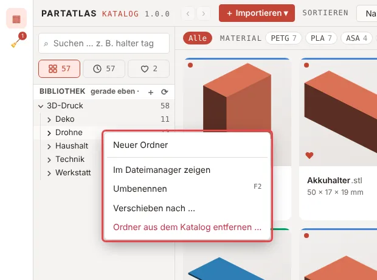
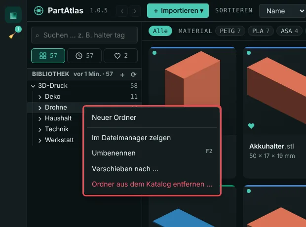
| Was | Wie |
|---|---|
| Neuer Ordner | Rechtsklick › Neuer Ordner. Er heisst „Neuer Ordner“ und steht gleich zum Umbenennen offen. |
| Umbenennen | Rechtsklick › Umbenennen, F2, oder ein zweiter Klick auf den Namen des schon gewählten Ordners (kein Doppelklick). Der Name wird direkt im Baum bearbeitet: Enter übernimmt, Esc bricht ab. |
| Verschieben | Den Ordner auf einen anderen ziehen — ein zugeklappter klappt beim Verweilen auf — oder Rechtsklick › Verschieben nach …. |
| Rückgängig | „Rückgängig“ in der Meldung oder Strg+Z. |
| Im Dateimanager zeigen | Rechtsklick › Im Dateimanager zeigen. |
| Aus dem Katalog entfernen | Rechtsklick › Ordner aus dem Katalog entfernen …: die Modelle darin gehen in den Papierkorb von partAtlas. Der Ordner und alles darin bleiben auf der Platte. |
Alles im Ordner geht mit, auch Bilder und PDFs. Tags, Drucke und Baugruppen der Modelle bleiben. Vorher legt partAtlas eine Sicherung an.
Für Namen gelten überall die Regeln von Windows (keine \ / : * ? " < > |, keine Namen wie CON), damit die
Ordner zwischen Windows und Linux tragbar bleiben.
Modelle umbenennen und verschieben
Genauso: F2, Rechtsklick › Umbenennen oder ein zweiter Klick auf den Namen eines gewählten Modells öffnet ein Feld direkt am Namen — markiert ist der Name, die Endung bleibt. Verschieben: Kacheln auf einen Ordner ziehen oder Rechtsklick › „In anderen Ordner verschieben …“. Nichts wird dabei überschrieben.
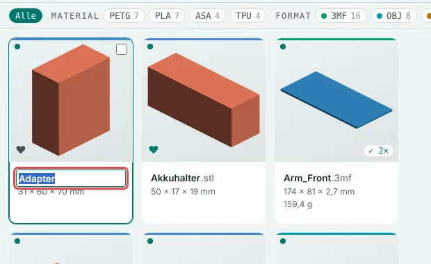
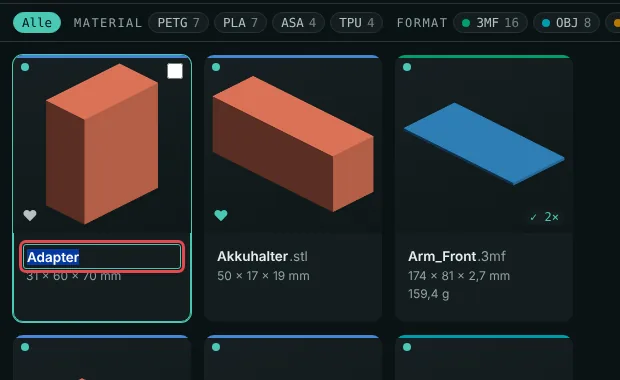
Im Slicer öffnen
Weil partAtlas auf deinem Rechner läuft, kann es Programme direkt starten: die Knöpfe oben im Inspektor und in der Liste (Slicer, CAD), „Öffnen mit …“ im Menü ⋯ oder Rechtsklick.
- Erkannt werden Slicer wie PrusaSlicer, OrcaSlicer, Bambu Studio, Anycubic Slicer Next, SuperSlicer und Cura sowie FreeCAD — unter Windows in den üblichen Programmordnern, unter Linux im PATH, als Flatpak oder AppImage.
- Je Art ein Standard: STEP und FCStd gehen ins CAD, alles andere in den Slicer. Umstellen und eigene Programme eintragen unter Einstellungen › Programme.
- Mit dem System öffnen geht immer.
Gestartet wird nur ein bekanntes Programm — nie ein Pfad, der aus einer Anfrage kommt.
Bereinigen und Löschen
Der Besen in der Leiste ganz links zeigt, wo aufzuräumen ist; das Abzeichen zählt fehlende, mehrfach liegende und unlesbare Dateien. Die Seitenleiste ist zweigeteilt: Aufräumen und Aufbewahrt. Jede Ansicht sagt oben, was sie zeigt und was ihre Aktionen tun.
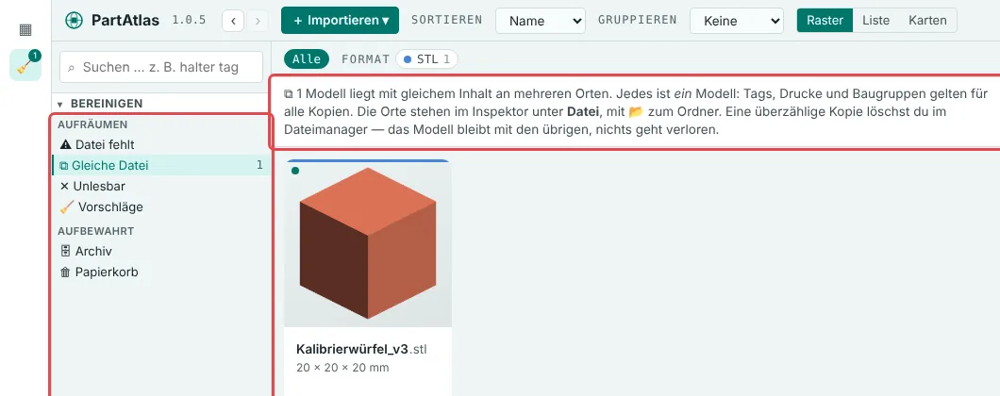
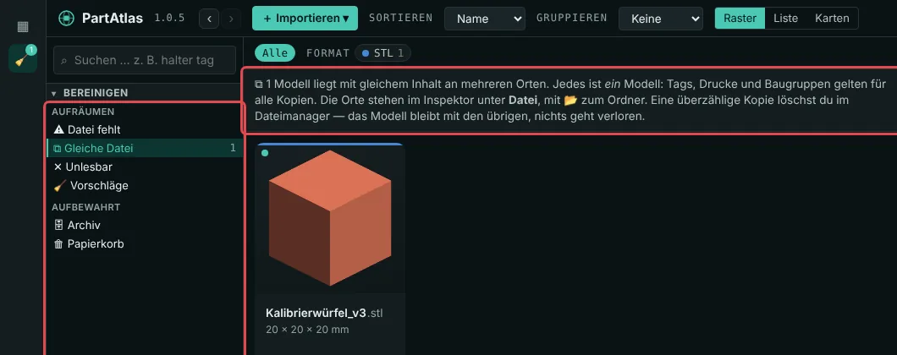
| Ansicht | Inhalt |
|---|---|
| Datei fehlt | Im Katalog vorhanden, auf der Platte nicht mehr. Entscheiden … öffnet das Fenster vom Ende des Einlesens: Ins Archiv (taucht die Datei wieder auf, kehrt das Modell von selbst zurück), Behalten (bleibt ohne Datei im Katalog) oder Löschen (Papierkorb). |
| Gleiche Datei | Dieselbe Datei mit gleichem Inhalt an mehreren Orten. Es ist ein Modell; im Inspektor unter Datei stehen alle Orte, ein Klick zeigt den Ordner. Eine überzählige Kopie löschst du im Dateimanager — das Modell bleibt mit den übrigen. |
| Unlesbar | Dateien, die partAtlas nicht lesen konnte; den Grund nennt der Inspektor. Im Programm öffnen und am selben Ort neu speichern — beim nächsten Einlesen liest partAtlas sie neu. |
| Vorschläge | Was Platz kostet und vermutlich weg kann, in Gruppen mit Summe: Entwürfe, Kopien gleichen Inhalts, grosse Dateien ohne Verwendung, lange nicht angefasste — je Zeile mit Grund, Grösse, Pfad (📂) und was daran hängt. partAtlas löscht hier nichts; du löschst im Dateimanager oder speicherst die Pfade als CSV. „Behalten“ heisst: nicht mehr vorschlagen. |
| Archiv | Modelle, die ruhen: nicht in Liste, Suche, Zählern und Sammlungen, aber mit allem, was daran hängt. Hinein über Rechtsklick › Ins Archiv, die Leiste oder das Fenster bei fehlenden Dateien; zurück über Rechtsklick oder „Zurückholen“ im Inspektor. |
| Papierkorb | Aus dem Katalog entfernte Modelle, Ordner, Sammlungen, Baugruppen, Drucke, Tags und Kaufteile — einzeln oder alle wiederherstellbar. Er wird nie von selbst und nie als Ganzes geleert. Ein einzelnes Modell lässt sich mit Endgültig entfernen … für immer herausnehmen, nach Eintippen von „entfernen“ und mit einer Sicherung vorher. |
Löschen mit Auskunft
Vor dem Löschen zeigt partAtlas, was am Modell hängt: Dateien, eigene Bilder, Baugruppen, Sammlungen, Tags — jeweils mit der Zahl der anderen Modelle, die daran hängen. Der Dialog gilt auch für mehrere Modelle auf einmal. Die Dateien in deinen Ordnern bleiben immer liegen.
Archive entpacken
Importieren › Archive entpacken … listet die ZIP- und TAR-Archive in deinen Ordnern (.zip, .tar,
.tar.gz, .tar.bz2, .tar.xz) und entpackt die gewählten je in einen Unterordner daneben. Nichts wird
überschrieben, das Archiv selbst bleibt liegen. Heraus kommen nur Modelle, G-Code, Bilder und Texte — nie Programme oder Skripte.
Gegen Archivbomben gibt es Grenzen für Grösse und Anzahl.
Einstellungen
Das Zahnrad ⚙ links unten. Hell und Dunkel schaltet ◐ daneben.
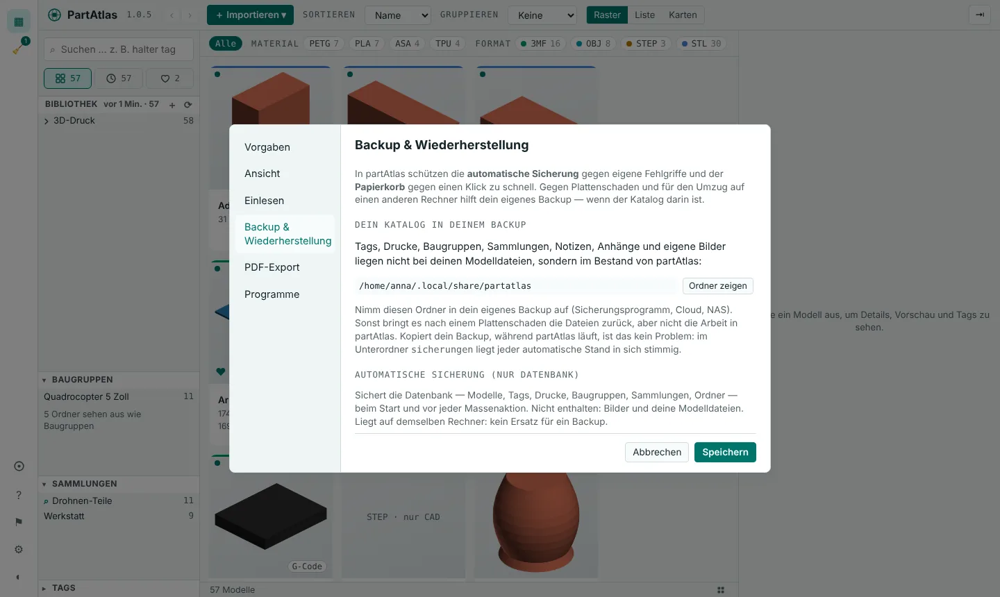
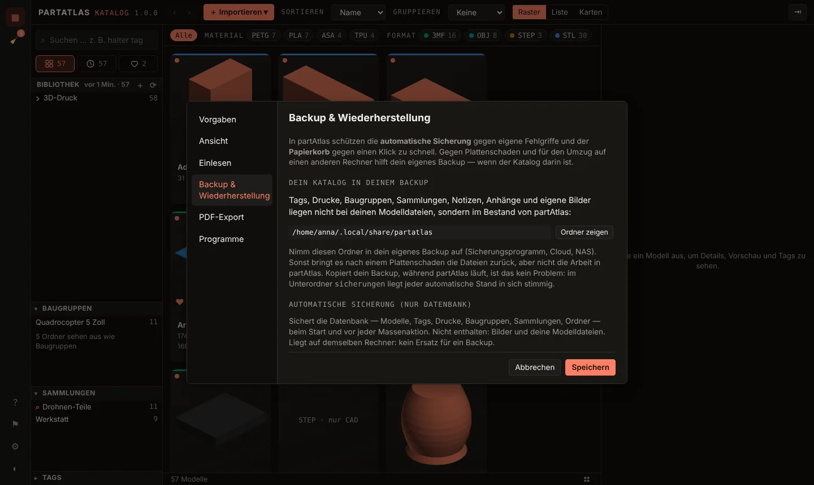
| Reiter | Inhalt |
|---|---|
| Vorgaben | Standardmaterial, Standardfarbe und Rollengrösse — was gilt, wenn ein Druckteil keine Angabe hat. |
| Ansicht | Farbschema (Filament, Messing, Blaupause, GNOME, zur Probe), Kachelgrösse, Dateiformat auf dem Vorschaubild, welche Zeilen unter dem Namen stehen. |
| Einlesen | Tags aus dem Dateinamen, wann Vorschaubilder berechnet werden, Einlesen beim Start, FreeCAD-Dokumente über FreeCAD einlesen (fragt vorher: ein FreeCAD-Dokument kann Programmcode enthalten), das Protokoll im Dateimanager. |
| Backup & Wiederherstellung | Wo dein Katalog liegt (fürs eigene Backup), die automatischen Sicherungen mit „Zurückholen …“, wie viele behalten werden, „Jetzt sichern“. |
| PDF-Export | Was die Stückliste einer Baugruppe als PDF enthält. |
| Programme | Slicer und CAD, mit denen partAtlas öffnet. |
Einen Bibliotheksordner nimmst du mit Rechtsklick › „Aus partAtlas entfernen …“ heraus; Dateien werden dabei keine gelöscht.
Daten und Sicherheit
Wo liegt was?
| Ort | Inhalt |
|---|---|
| Deine Ordner | Deine Modelldateien. partAtlas schreibt dort nur auf deine ausdrückliche Aktion (umbenennen, verschieben, Ordner anlegen, entpacken) und löscht nie. |
| Der Bestand | Was partAtlas dazu weiss: Katalog, Tags, Drucke, Baugruppen, Sammlungen, Notizen, Anhänge, eigene Bilder, Vorschaubilder, Sicherungen. Unter Windows C:\Users\<Name>\.local\share\partatlas, unter Linux ~/.local/share/partatlas; anderer Ort mit PARTATLAS_BESTAND. |
- Dein Backup: Nimm den Bestand in dein eigenes Backup auf (Sicherungsprogramm, Cloud, NAS). Einstellungen › Backup & Wiederherstellung zeigt ihn mit „Ordner zeigen“. Kopiert dein Backup, während partAtlas läuft, ist das kein Problem.
- Automatische Sicherungen: partAtlas sichert seine Datenbank beim Start (wenn sich seit der letzten etwas geändert hat) und vor jeder grösseren Aktion — Ordner entfernen, viele Modelle löschen, Ordner umbenennen. Es behält die letzten 5 und je Tag die neueste für 30 Tage (einstellbar). Zurückholen geht in den Einstellungen; auch das lässt sich wieder rückgängig machen.
- Sicher schreiben: Jeder Schreibvorgang geht über eine Arbeitsdatei,
fsyncund Umbenennen — nie wird eine Datei an Ort und Stelle verändert. Beim Verschieben, Umbenennen und Entpacken wird nie etwas überschrieben. - Nur lokal: Der Server hört nur auf
127.0.0.1und ist von aussen nicht erreichbar.
Geht etwas schief (Platte voll, Datei in einem anderen Programm geöffnet), sagt partAtlas es in einem Satz. Einzelheiten stehen im Protokoll — Einstellungen › Einlesen › „Protokoll im Dateimanager zeigen“. Bei einem Fehler genügt es, diese Datei zu schicken.
Tastatur
| Taste | Wirkung |
|---|---|
| F1 | Dieses Handbuch, beim Kapitel zur jetzigen Ansicht. |
| F2 | Umbenennen: den Ordner mit dem Fokus, sonst das gezeigte Modell. |
| Strg+Z | Das letzte Umbenennen oder Verschieben rückgängig machen. |
| / | In die Suche springen; Esc leert sie. |
| Strg+A | Alle Modelle der Ansicht wählen. |
| ← → ↑ ↓, Pos1, Ende | Durch die Modelle gehen; mit Umschalt die Auswahl erweitern. |
| Leertaste | Das gezeigte Modell zur Auswahl nehmen oder herausnehmen. |
| Enter | Das Modell im Standardprogramm öffnen. |
| Entf | Die gewählten Modelle löschen (mit Rückfrage, in den Papierkorb). |
| Esc | Auswahl aufheben, Fenster schliessen, Umbenennen abbrechen. |
| Alt+← / → | Zurück und vor, wie im Browser. |
Dateiformate
| Format | Was partAtlas daraus liest |
|---|---|
| 3MF | Geometrie, eingebettetes Vorschaubild, Objekte, Filament je Platte, die Einstellungen des Slicer-Projekts (Reiter „Slicer“). |
| STL | Geometrie, Maße, Volumen, Gewicht. Vorschau wird berechnet. |
| OBJ | Geometrie, Maße. Vorschau wird berechnet. |
| STEP / STP | Wird katalogisiert und im CAD geöffnet. Ist FreeCAD installiert, wandelt partAtlas die Dateien im Hintergrund (ohne Fenster) in ein Netz um: dann gibt es Vorschau, Maße, Gewicht und 3D-Ansicht. Ohne FreeCAD bleibt es bei „nur CAD“. |
| FCStd | FreeCAD-Dokument: Titel, Urheber und das Bild, das FreeCAD beim Speichern mitlegt. Maße, Gewicht und 3D-Ansicht über FreeCAD nur nach deiner Zusage (Einstellungen › Einlesen). |
| G-Code, 3MF-Projekt am Druck | Einstellungen des Slicers, Gewicht und Druckzeit (Bambu Studio, OrcaSlicer, Anycubic Slicer Next, PrusaSlicer). |
Als Anhang passt jede Datei; im Browser öffnen PDF, Bilder, Text und SVG, alles andere das Programm des Rechners.
Was geht, was kommt
partAtlas zeigt auch, was die dateibasierte Datenbank flatgraph in einem echten Programm kann. Mit Fassung 1.0 ist der Katalog fertig; danach kommen die Drucker dazu.
| Funktion | Stand |
|---|---|
| Einlesen, Suche, gemerkte Suchen, Ansichten, Auswahl wie im Explorer | da |
| Tags, Material, Sammlungen, Favoriten, Entwürfe, Varianten | da |
| Galerie, 3D-Ansicht, eigene Bilder, Notizen, Anhänge | da |
| Baugruppen mit Stückliste, Kaufteilen, Export | da |
| Drucke mit Fotos, G-Code, Einstellungen und Vergleich | da |
| Ordner anlegen, umbenennen, verschieben | da |
| Bereinigen, Archiv, Papierkorb, automatische Sicherungen | da |
| Versionsverlauf je Modell (frühere Fassungen einer Datei) | als Nächstes |
| Backup als ZIP und Wiederherstellen in partAtlas | nach 1.0 |
| Drucker anbinden (Moonraker, Bambu), Warteschlange sichtbar, „Nochmal drucken“ | später |
| Filamentlager: Spulen, „Reicht das Filament?“, Abbuchen und Kosten je Druck | da |
| 7z und RAR entpacken, Passwort für den Zugriff im Heimnetz | offen |
Was fehlt oder falsch ist, sag es: ein Bildschirmfoto und ein Satz dazu genügen.